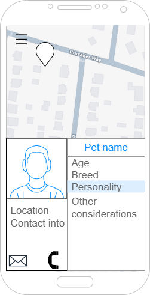
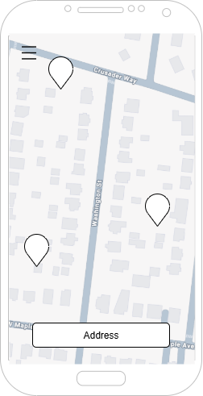
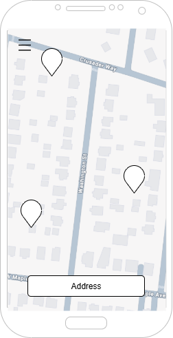

👋
We are attempting to create a map view showing local areas to adopt pets, with a filter based on Petfinder's search engine. This will be an app built with Electron. This will also serve as my Capstone project for my Web Development Associates at Raritan Valley Community College. Below will be images showing the layout of the app mocked up, along with color codes and selected fonts
 
